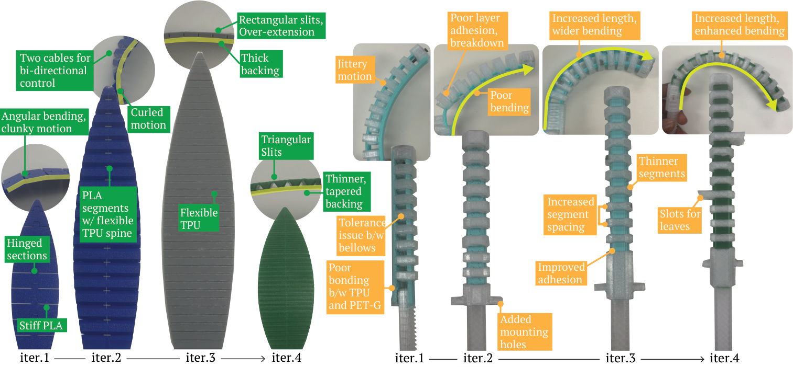
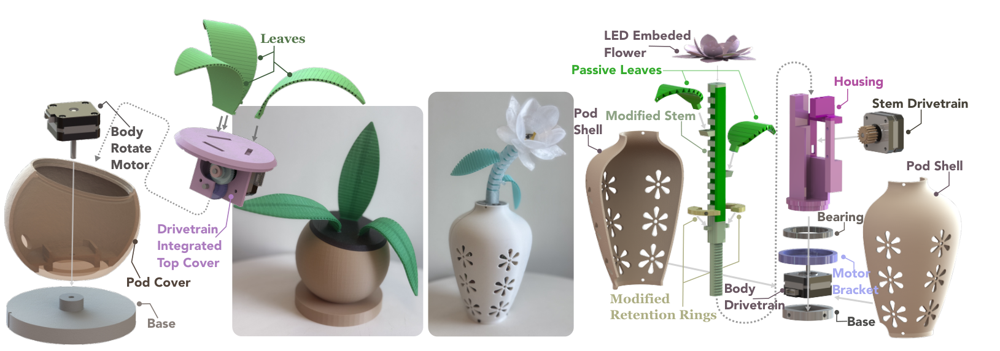
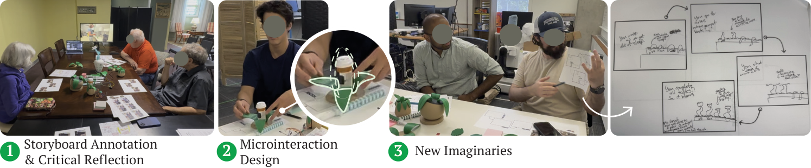
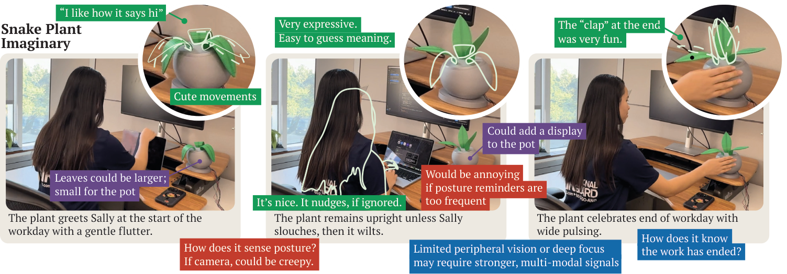
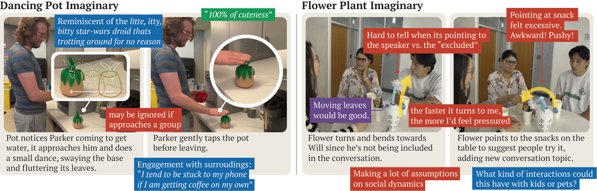

Using a Research through Design process, we translate plant-inspired metaphors into robot prototypes and HRI imaginaries.
Plants offer a paradoxical model for interaction: they are ambient, low-demand presences that nonetheless shape atmosphere, routines, and relationships through temporal rhythms and subtle expressions. In contrast, most human-robot interaction (HRI) has been grounded in anthropomorphic and zoomorphic paradigms, producing overt, high-demand forms of engagement.
Using a Research through Design (RtD) methodology, we explore plants as metaphoric inspiration for HRI. We conducted iterative cycles of ideation, prototyping, and reflection to investigate what design primitives emerge from plant metaphors and morphologies, and how these primitives can be combined into expressive robotic forms.
Contributions
Artifacts: a suite of open-source robotic plant prototypes exploring expressive potential and ambient interaction.
Designerly insights: how people perceive and imagine plant-inspired robots, through design critiques, annotated portfolios, and imaginaries.
Design considerations: to inform the translation of plant metaphors into robot design.
Design process
Plant-inspired robot primitives
Drawing on a survey of plant life, we identified leaves, stems, flowers, and pots as key elements. Treating these elements as design primitives structured our prototyping process and provided scaffolding for translating plant metaphors into tangible robotic primitives.
Leaf
A lightweight, string-driven mechanism printed in TPU. Pulling the string straightens the leaf; releasing it returns the leaf to its curled form, enabling gestures such as wilting, perking, or unfurling.
Stem
A concentric bellow mechanism, adapted from soft and continuum robots, supports gestures such as leaning, bowing, and swaying that evoke the motion of plant stems.
Pot
Containers of other primitives and extensions of expression. Some pots turned or swayed; others moved across the surface, offering different kinds of presence.
Flower
Our experiments with flowers were limited, exploring color, translucency, and the glow of embedded LEDs.

Our leaf and stem primitives underwent several design iterations to realize plant-like expressive potential. Servo motors proved too noisy and jittery; stepper motors with TMC drivers enabled near-silent operation.Prototypes
Four speculative probes
We constructed four plant-inspired robotic prototypes: Snake Plant, Flower Plant, Keeper Plant, and Dancing Pot. Each combines the primitives in distinct configurations, evoking new imaginaries around contextual and expressive possibilities.
Snake Plant
Three actuated leaves mounted on a rotatable pot. When the pot rotates, the angled top cap produces a characteristic leaning motion, as if the plant is subtly shifting direction.
Imaginary
Placed on a desk, the plant mirrors a user’s posture: upright with good posture, drooping as posture deteriorates, and recovering when corrected. It greets the user at the start of the day and performs a small celebration at the end.
Flower Plant
An actuated stem crowned with a flower on a rotating pot. Stem bending and pot rotation produce composite gestures that echo a sunflower orienting itself in its environment.
Imaginary
At a coffee table, the robot joins the conversational flow: turning toward active speakers, leaning toward quieter participants to invite inclusion, or gesturing toward shared objects to ease conversational lulls.
Keeper Plant
Drawing in part from the Venus flytrap, eight small leaves arranged around a central cavity curl inward to enclose or unfurl outward. Folding and blooming take on functional roles of holding and presenting.
Imaginary
Used as a pill organizer, the plant grips the box when medication is not due. At the appointed time, the leaves slowly unfurl and softly pulse as a nudge to take the medicine.
Dancing Pot
A mobile pot crowned with a fern-inspired, two-tier leaf arrangement. Juxtaposing locomotion with delicate leaf gestures explores how mobile robots and plant metaphors can enrich each other.
Imaginary
Positioned near a water dispenser, the plant approaches visitors and performs a short dance as they fill their glass, creating a playful sense of ambient presence.

Our prototypes leverage our primitives in distinct configurations to be probes of the plant-inspired design space.Design workshops
Eliciting imaginaries
To explore how plant-inspired robotic forms might be interpreted and re-imagined, we conducted three 90-minute design workshops with 11 participants aged 19 to 82; the third workshop consisted entirely of older adults. Participants were encouraged to touch, move, and manipulate the prototypes.

Our design workshops elicited perceptions and new imaginaries of plant-inspired robots with three phases of activities.
Storyboard annotation
Participants annotated four video storyboards, each depicting an imaginary for a prototype, and discussed what felt expressive, what seemed confusing, and what they would change.
Micro-interaction design
Pairs modified a storyboard or sketched a new interaction sequence, puppeting the prototypes or bodystorming to illustrate expressive timing and gesture.
New imaginaries
Participants imagined new contexts and sketched speculative scenarios, envisioning morphology, temporality, behavior, and expressions.
Findings
Imagining plant-inspired robots
Participants’ imaginaries reconfigured and built upon our prototypes, framing plant-inspired robots as ambient, expressive, and multifunctional artifacts woven into everyday routines.

Annotated portfolio showcasing the Snake Plant imaginary and participants’ perceptions. Green marks positive impressions, red critiques, blue questions or reflections, and purple concrete extension ideas.

Annotated portfolio showcasing the Flower Plant and Dancing Pot imaginaries and participants’ perceptions.
Mediating social interactions
Participants imagined classroom plant robots wilting as noise levels rose, and a family “garden” of robots, one per person, whose posture signals each member’s mood.
Work and focus
Extending the Snake Plant, participants envisioned reminders to move after sitting too long, to rest their eyes, or to refocus when distracted, using plant-like behaviors.
Sleep and time hygiene
P11 imagined a plant-inspired reading lamp that gradually dims and shifts its posture as evening progresses, nudging the user toward rest.
Habit tracking
P5 proposed a set of plant robots, each tied to a habit: one grows when a run is completed, another droops when journaling is skipped.
Design considerations
Translating plant metaphors for ambient HRI
We consolidated reflections from the RtD process and insights from the workshops into design considerations organized along four axes.
Presence
Situating presence
The role, placement, and ecology of plants within a space shape how people live with them, and offer cues for situating robots as everyday artifacts.
Palette
A rich yet delicate expressive palette
Plant gestures such as swaying and drooping shift robotic expression toward more ambient, interpretive forms, but are rarely fixed in meaning.
Rhythms
Rhythms of expression
Plants unfold across multiple timescales, from rapid movements to seasonal arcs of growth and decay, inviting behaviors that range from immediate reactions to long-term ambient signaling.
Shape
Shapes of presence
Plant inspiration can be rendered literally, abstractly, or as hybrids. Literal forms offer intuitive reading; abstract forms introduce ambiguity that invites interpretation.
“I don’t want more clutter. I have enough on my desk... why do I need another thing?”
P9, on the value and necessity of a new artifact
“Slouching for 5 seconds is ok, slouching for 1 hour is a problem.”